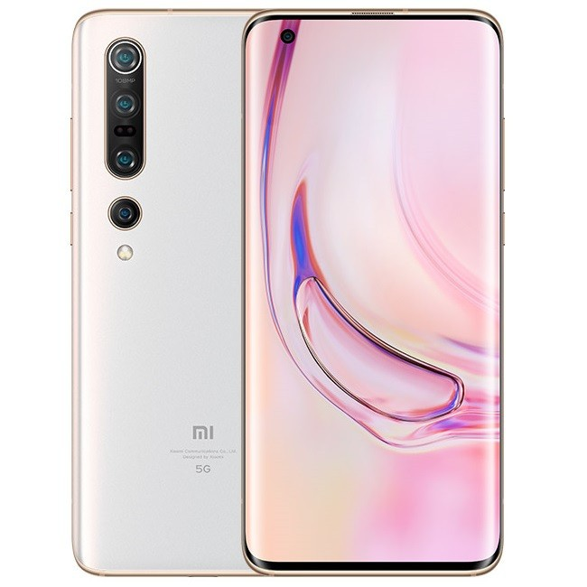
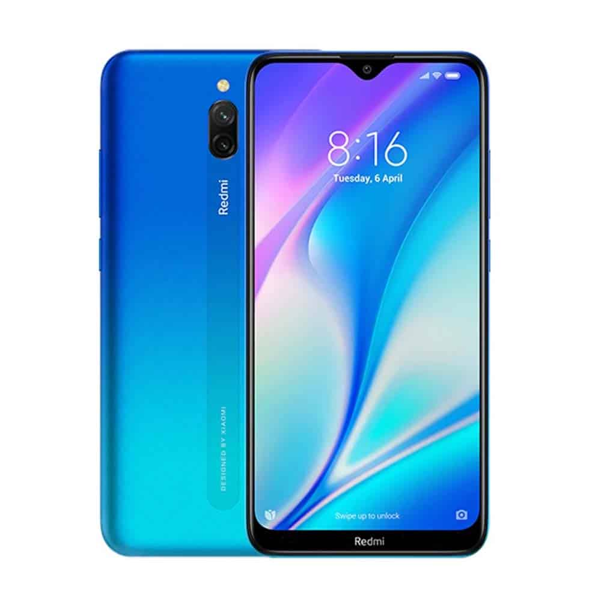
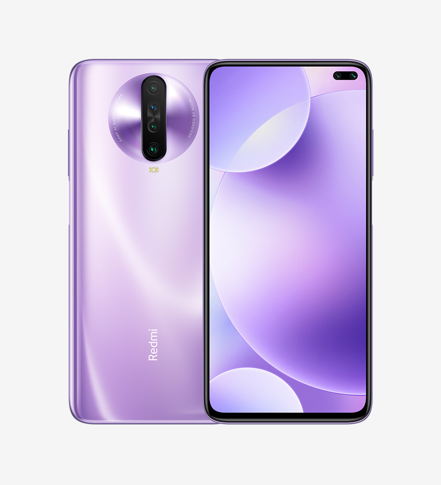

Xioami Mi 10 Pro 5G
feb 12, 2007views : 3,487,497
Ponsel 5G Xiaomi ini dirilis secara global pada bulan Februari 2020. Dengan harga yang lumayan bersaing, Mi 10 Pro 5G ditenagai oleh salah satu chipset terkuat yang ada di pasaran, yaitu Snapdragon 865 yang dibuat dengan proses manufaktur 7+ nm.
lihat selengkapnya

Xiaomi Mi 10 5G
feb 12, 2007views : 3,487,497
Mi 10 5G adalah versi yang lebih rendah dari Mi 10 Pro 5G. Perbedaan di antara keduanya terletak di empat sektor, yaitu memori, kamera belakang, baterai, dan opsi warna.
lihat selengkapnya

Xiaomi Redmi 8A Dual
feb 12, 2007views : 3,487,497
Redmi 8A Dual adalah ponsel entry-level Xiaomi yang dibanderol cukup bersaing di kelasnya. Meskipun demikian, HP ini hadir dengan sejumlah parameter yang menarik dan mungkin tidak dimiliki oleh beberapa kompetitornya.
lihat selengkapnya

Xiaomi Poco X2
feb 12, 2007views : 3,487,497
Dapur pacu Poco X2 ditenagai oleh chipset kelas gaming yang dibuat dengan pabrikasi 8 nm dan menawarkan kecepatan hingga 2,2 GHz. Kapasitas RAM dan ROM-nya sendiri dimulai dari 6/64 GB hingga 8/256 GB.
lihat selengkapnya

Xiaomi Redmi K30
feb 12, 2007views : 3,487,497
Dapur pacu Redmi K30 tidak bisa disepelekan karena sudah dilengkapi dengan chipset Qualcomm SDM730 Snapdragon 730G (8 nm) yang tentunya akan mendukung segala macam aktivitas multitasking.
lihat selengkapnya
Xiaomi Redmi Note 8T
feb 12, 2007views : 3,487,497
Xiaomi memberikan dua varian kapasitas RAM untuk smartphone ini, yakni 3 GB dan 4 GB. Harga yang dibanderol untuk ponsel ini juga tak banyak berbeda dengan Redmi K30 yang spesifikasinya cenderung lebih baik.
lihat selengkapnya